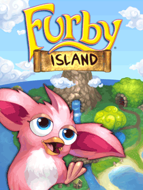

Furby Island
Adventure santai di pulau tropis: jelajahi pulau, kumpulkan bulu dan perlengkapan, bantu para Furby menyiapkan pesta besar. Versi persis game Java aslinya, dijalankan apa adanya oleh emulator di browser.
Sistem save, pola nfsu2.xyz
Progres tersimpan otomatis di penyimpanan persisten browser perangkat ini, jadi menutup tab tidak menghapus save. Mau pindah HP atau browser? Buat file vault: seluruh data save dibungkus jadi satu file terenkripsi passphrase. File itu bisa disimpan di mana saja dan dipulihkan di perangkat lain dengan passphrase yang sama.